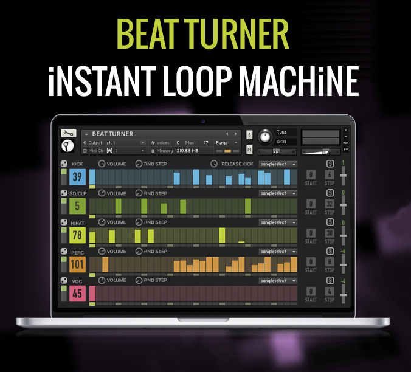
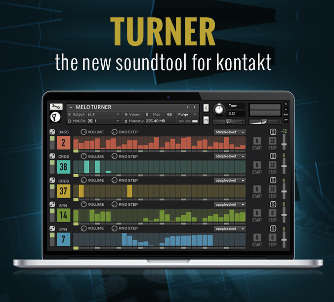
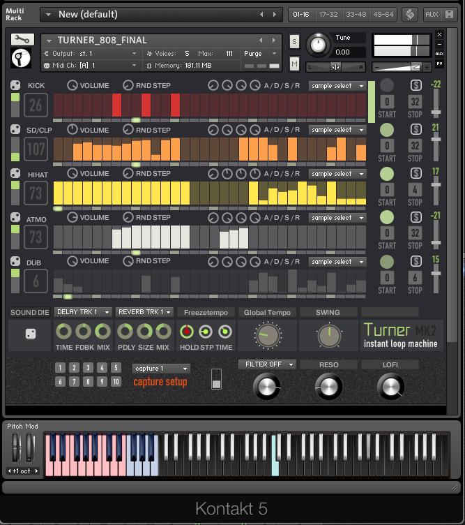
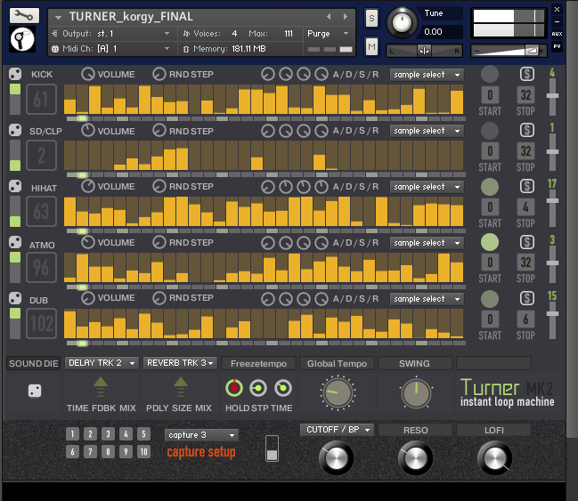
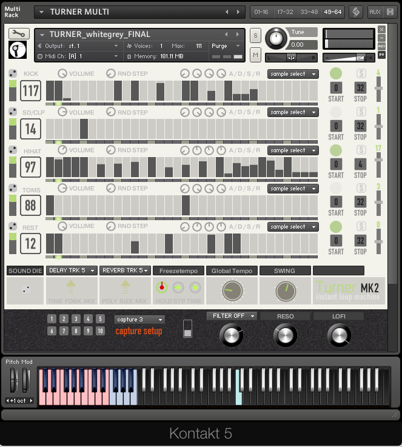
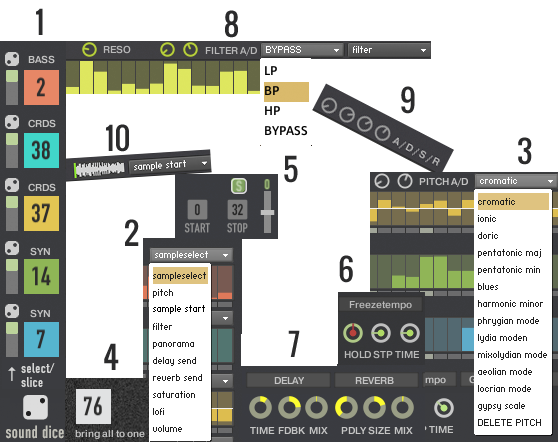

The '808' First five Entries in Google Search Maschine
Roland TR-808 | http://www.turnertv.de | Mr. Turner - Meister des Lichts | http://www.turnerconstruction.com/ | https://www.turners.co.nz/
The 'Turner' First five Entries in Google Search Maschine
William Turner | Eardwulf wird um 808 neuerlich König von Northumbria | Nokia 808 PureView | Roland MC-808 | 808s & Heartbreak
CREATING LOOPS NEVER WAS SO EASY AND EFFECTIVE IN KONTAKT.
William Turner | Eardwulf wird um 808 neuerlich König von Northumbria | Nokia 808 PureView | Roland MC-808 | 808s & Heartbreak
CREATING LOOPS NEVER WAS SO EASY AND EFFECTIVE IN KONTAKT.
- LOAD UP TO 127 SAMPLES IN EACH SEQUENCER
- 10 SEQUNECERTYPES OPEN NEW WAYS OF SAMPLE- SEQENCING
- CREATE LOOPS OR REMIX EXISTING IDEAS
- MADE FOR INSPIRING MUSICAL EXPERIENCES
TUTORIALS
- 1) sound choose, dice, fader for select/slice mode
- 2) main menu for shown parameters
- 3) pitch menu: 13 different tone scales & modi, pitch env
- 4) brings all 5 sequencer to a common value
- 5) start, stop, transpose / range: +/- 3 octaves
- 6) stutter: hold step, step position, tempo of a held step
- 7) fx: sum for delay an dreverb sends
- 8) filtermenu: lp, bp, hp filter, filter env, resonance
- 9) volume envelope, attack, decay, sustain, release
- 10)sample start function for each sequencer

TURNER COMES WITH
- full Kontakt 5.1 required
- for Win XP / Win 7 / Win 8 or OS X 10.6 / 10.7 / 10.8 / 10.9 / Yosemite